Ship fast, stay secure: from code to runtime
Official description
You write the code. You own the pipeline. Now security is yours too — but it doesn't have to slow you down. See how Defender for Cloud and GitHub Advanced Security catch vulnerabilities where you already work: your CLI, your repo, your pull request, your cloud. No workflow changes required.
Summary
Overview
This advanced-level session demonstrates an integrated security workflow that connects Microsoft Defender for Cloud and GitHub Advanced Security, spanning local code scanning through to runtime cloud risk. James Brotsos argues that the long-standing trade-off between shipping fast and staying secure is dissolved by embedding AI-driven, agentic scanning and remediation directly into developer-native surfaces—terminal, IDE, and pull request—while giving security teams a correlated, prioritized posture view.
Key announcements
- Defender CLI powered by code name "MDASH" [00:02:46
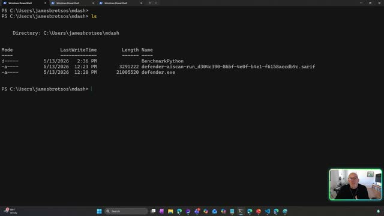
m05s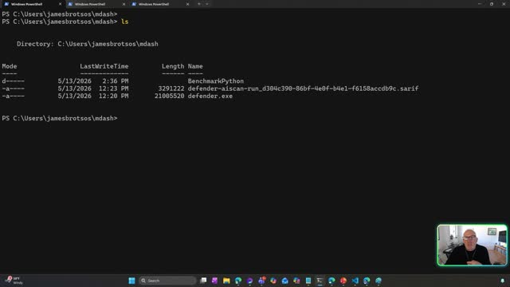
m10sp05sp10s] — A multi-model agentic scanning harness that orchestrates over a hundred specialized AI agents across an ensemble of frontier and distilled models, running a five-stage pipeline (prepare attack surface, scan candidate paths, validate by agent debate, de-duplicate, prove the vulnerability with triggering inputs). - AI-powered fix command in the CLI [00:04:19
 m05s
m05s m10s
m10s p05s
p05s p10s] — Copilot analyzes a SARIF result file, understands code context, and rewrites the vulnerable code to fix it without leaving the terminal.
p10s] — Copilot analyzes a SARIF result file, understands code context, and rewrites the vulnerable code to fix it without leaving the terminal. - Pull request annotations with contextual fixes [00:06:22
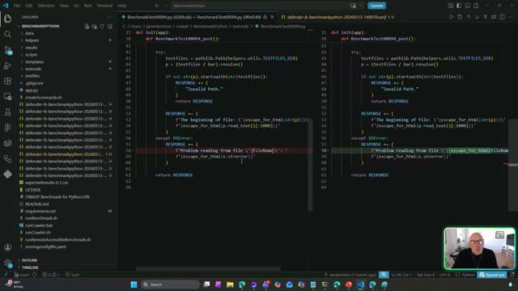
m05s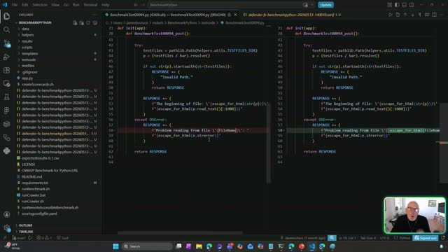
m10s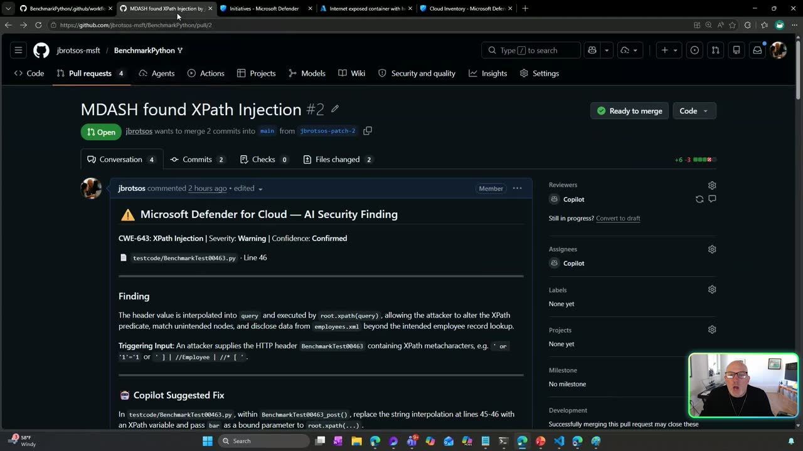
p05s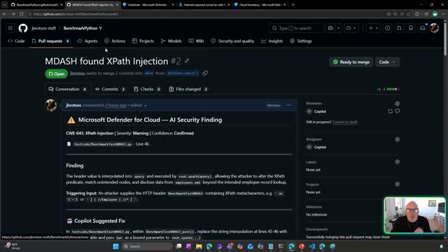
p10s] — Findings such as XPath injection surface in the PR with a plain-language explanation and a Copilot-suggested parameterized fix. - AI code security initiative view [00:07:34
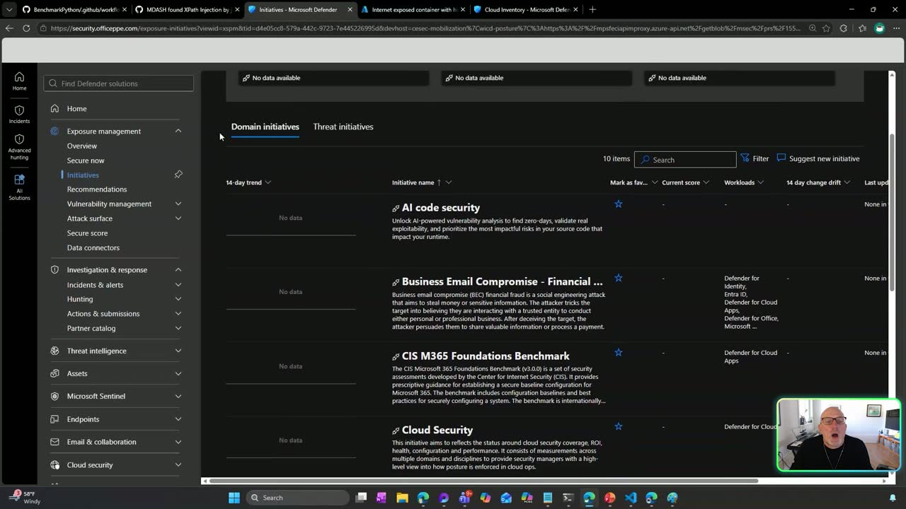
m05s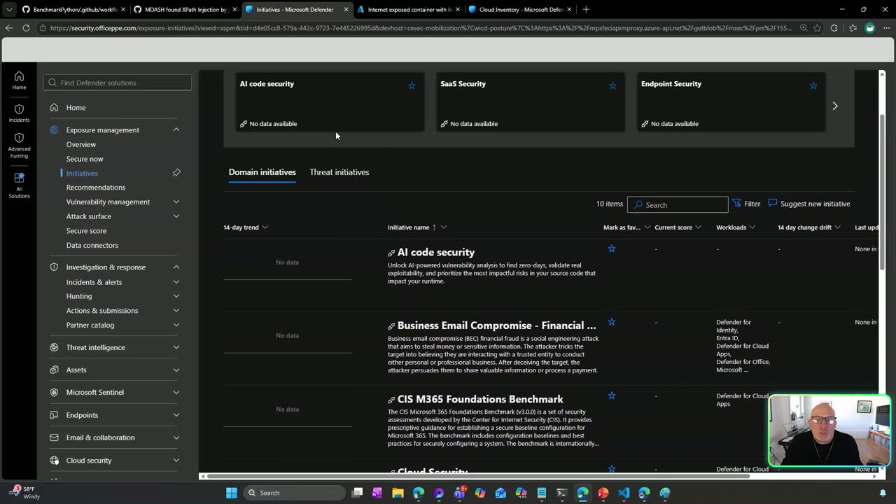
m10s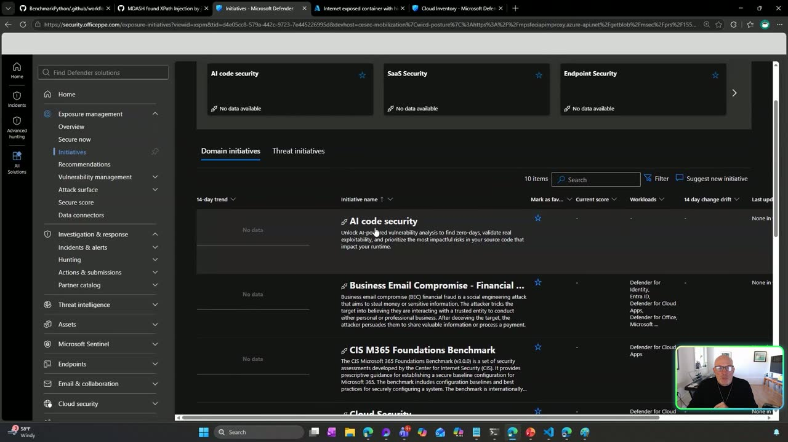
p05s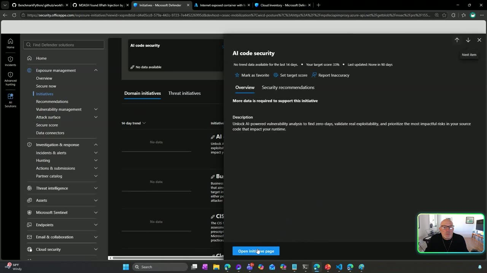
p10s] — A single-pane-of-glass posture dashboard that rolls up findings from the CLI, pipeline, and agentless code scanning, scored and prioritized, and correlated with the cloud environment. - Code-to-runtime attack path mapping [00:08:54
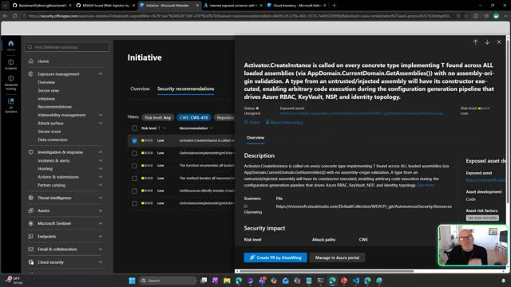
m05sm10s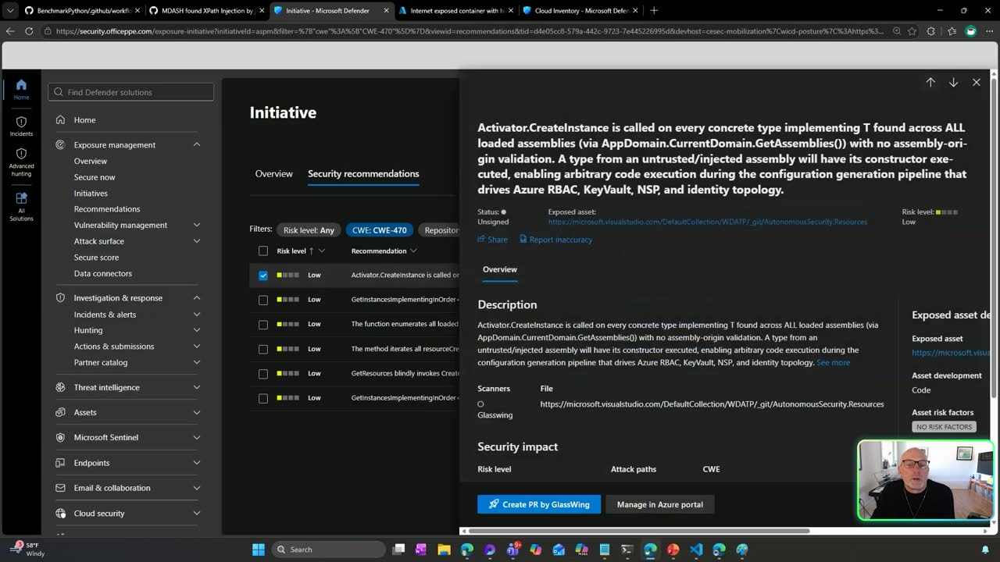
p05s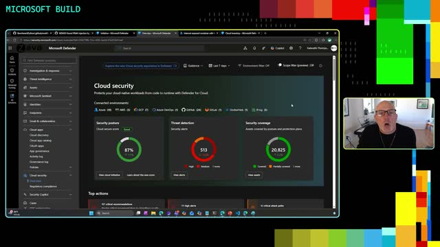
p10s] — Defender traces a running container back through runtime, ship, build, and code phases, filtering on risk factors like internet exposure and sensitive data paths. - GitHub issue creation assigned to Copilot [00:12:33
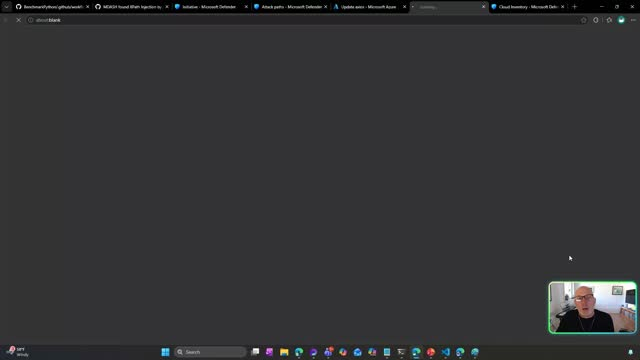
m05s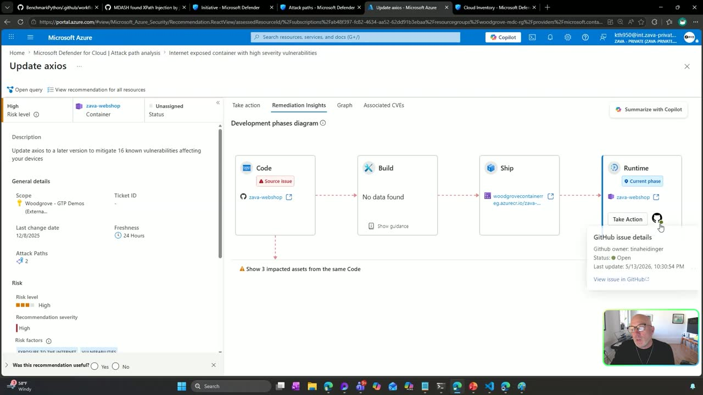
m10s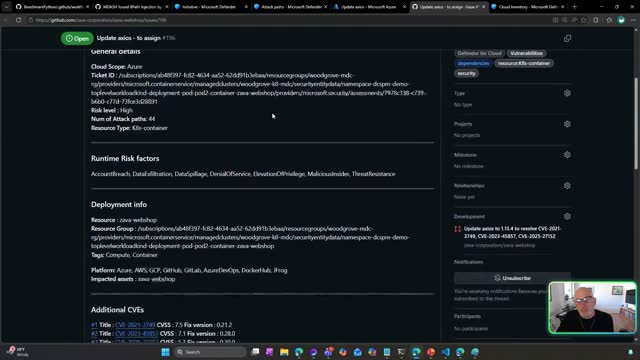
p05s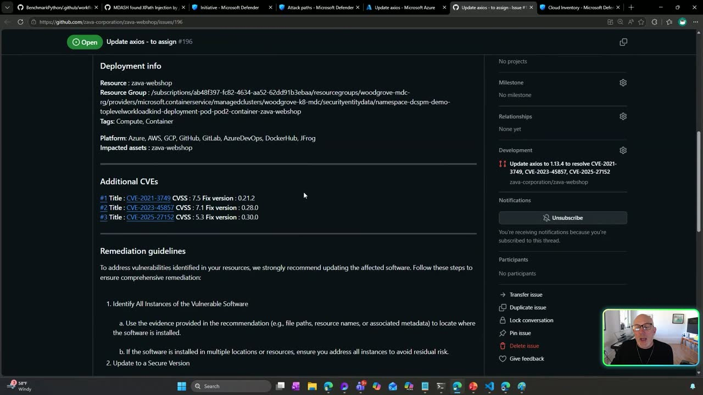
p10s] — From the attack path view, a GitHub issue is created, assigned to Copilot, and identifies that fixing one package resolves three additional CVEs. - AI model artifact scanning [00:16:04
 m05s
m05s m10s
m10s p05s
p05s p10s] — The same CLI scanner inspects model artifacts for malicious content, catching a malicious pickle serialization payload in the pipeline before deployment.
p10s] — The same CLI scanner inspects model artifacts for malicious content, catching a malicious pickle serialization payload in the pipeline before deployment.
{kind=link}
{kind=link}
{kind=link}
{kind=link}
{kind=link}
{kind=link}
{kind=link}
{kind=link}
{kind=link}
{kind=link}
{kind=link}
{kind=link}
{kind=link}
{kind=link}
{kind=link}
{kind=link}
{kind=link}
{kind=link}
{kind=link}
{kind=link}
Topics covered
- The broken collaboration loop between developers and security teams
- Agentic, multi-model scanning versus traditional single-model pattern matching
- Shift-left scanning in the terminal before code reaches the repository
- Side-by-side review of AI-generated fixes in the IDE
- Pipeline gating via GitHub Actions
- Correlating code vulnerabilities with runtime cloud risk and business criticality
- Attack path analysis: internet exposure, sensitive data access, and known vulnerabilities combined
- AI model supply-chain security and pickle deserialization attacks
- Discoverability of AI models across Azure ML workspaces and registries
- Immutable artifact remediation ("replace, don't patch")
Notable quotes
"The model is one input. The system around it is the product." — James Brotsos
"It's reasoning about what the code actually does, the way an attacker would." — James Brotsos
"The security team sees the risk, the developer sees where to fix it, the same data, but with a different lens." — James Brotsos
Products and tools mentioned
- Microsoft Defender for Cloud
- GitHub Advanced Security
- Defender CLI (code name "MDASH")
- GitHub Copilot
- VS Code
- GitHub Actions
- Azure portal
- Azure Machine Learning
- Hugging Face
- PyTorch
- TensorFlow
- SafeTensors
- SARIF
Speakers featured
- James Brotsos — Product Manager working on securing code and applications, Microsoft
Follow-up resources
- The Defender CLI is available today, built into Microsoft Defender and GitHub Advanced Security (no specific link provided in the transcript).
Transcript
Show / hide transcript (22,111 chars)
[00:00:01] JAMES BROTSOS: Hi, everyone. [00:00:01] Welcome. I'm James Brotsos. [00:00:03] I'm a Product Manager working on securing code and applications. [00:00:07] Today, I want to show you something [00:00:08] that I think changes the game for how developers [00:00:10] and security teams work together. [00:00:12] It's a multi-model agentic scanning harness. [00:00:15] It's exactly what it sounds like -- [00:00:17] AI agents that just don't flag problems, [00:00:19] but actually help you fix them [00:00:21] at the speed you're already shipping code. [00:00:23] Now, the title of this session is "Ship Fast, Stay Secure." [00:00:28] And I chose those words carefully [00:00:29] because for most developers, [00:00:31] those two things have always felt like a trade-off. [00:00:33] Either you can move fast, or you can be secure. [00:00:36] Pick one. What I'm going to show you today is [00:00:39] that you don't have to choose anymore. [00:00:42] Here's the reality we all live in. [00:00:45] Application security is a team sport. [00:00:47] You've got developers on one side, security managers [00:00:50] on the other, and somewhere in the middle, [00:00:52] hopefully they're collaborating. [00:00:54] But let's be honest. [00:00:55] In most organizations, that collaboration looks [00:00:57] like a security team dropping findings [00:00:59] on developers' desks two weeks after the code shipped, [00:01:02] or a developer ignoring a scan result [00:01:05] because it didn't have enough context to act on. [00:01:07] The intent is good. [00:01:09] The workflow is broken. [00:01:11] What if we could actually close that gap? [00:01:14] Not by adding more process, more tools, more dashboards, [00:01:17] but by embedding security directly [00:01:19] into places developers already work: your terminal, [00:01:22] your pull request, your IDE. [00:01:25] That's the bet we've made. [00:01:27] So let's get specific. [00:01:28] On the left, the developer's world: code, dependencies, [00:01:33] infrastructure as code, pull requests, [00:01:35] security alerts, issue tracking. [00:01:38] On the right, the security team's world: security posture, [00:01:41] running workloads, attack paths, exploitability, [00:01:44] business criticality, recommendations. [00:01:47] The magic happens in the middle, where security lives. [00:01:51] That intersection is what we've built. [00:01:53] Microsoft Defender for Cloud [00:01:54] and GitHub Advanced Security working together [00:01:57] so that a vulnerability found in code can be traced all the way [00:01:59] to the runtime risk in your cloud environment. [00:02:02] And the other direction, too. [00:02:03] A cloud risk can be mapped directly back to the line [00:02:06] of code and the exact developer who can fix it. [00:02:10] And now, with AI agents in the loop, [00:02:13] we're not just connecting these dots. [00:02:15] We're explaining the findings, suggesting the fix, [00:02:18] and in most cases, opening the pull request. [00:02:22] All right. [00:02:22] Enough slides. [00:02:23] Let me show you exactly what this looks like. [00:02:25] Let's jump into the demo. [00:02:27] All right. [00:02:28] Let's get into it. [00:02:29] I'm here in my terminal, sitting [00:02:30] in a repository called Benchmark Python. [00:02:34] It's an open-source project with some real vulnerabilities buried [00:02:37] in the code, the kind of thing traditional static analysis [00:02:40] scanners would typically give a clean bill of health to. [00:02:44] I'm going to run the Defender CLI powered [00:02:46] by what we call code name MDASH. [00:02:49] Here's what makes it different [00:02:50] from every other scanner you've used before. [00:02:52] MDASH doesn't rely on a single model doing pattern matching. [00:02:58] It orchestrates over a hundred specialized AI agents [00:03:01] across an ensemble of frontier and distilled models, [00:03:05] and it runs them through a five-stage pipeline. [00:03:08] It prepares the attack surface. [00:03:10] It scans candidate code paths. [00:03:12] It validates findings by having agents actually debate whether [00:03:15] the bug is reachable and exploitable, de-duplicates, [00:03:20] and then proves the vulnerability [00:03:21] by constructing triggering inputs. [00:03:24] The model is one input. [00:03:26] The system around it is the product. [00:03:29] Now, that's the same engine that is running right here in my CLI. [00:03:33] Let me kick off a scan. [00:03:37] Look at that. [00:03:38] It caught vulnerabilities [00:03:39] that traditional pattern matching completely misses. [00:03:42] MDASH understands systematic logic flow, and it's not looking [00:03:46] for known bad strings. [00:03:48] It's reasoning about what the code actually does, [00:03:51] the way an attacker would. [00:03:53] And all of this happened right here in my terminal. [00:03:56] No waiting on pipeline. [00:03:58] The shift-left started right here before the code even [00:04:01] touched the repository. [00:04:03] Okay. So now that we've found some vulnerabilities, [00:04:08] this is where it gets really interesting. [00:04:10] I just don't want to have this list of findings. [00:04:13] I can fix them right here, right now. [00:04:16] So let me issue the fix command. [00:04:19] So, in here, I find my result file, [00:04:22] which is a standardized output SARIF file. [00:04:26] And I am going to now submit a fix for it. [00:04:37] What's happening right now is [00:04:38] that Copilot is analyzing the vulnerability, [00:04:41] understanding the context of the code, [00:04:43] and making the actual change to fix it. [00:04:45] No context switching, no filing a ticket [00:04:48] for later, no copy, pasting. [00:04:51] The AI understands what's broken and rewrites the code to fix it. [00:04:56] So this is the developer loop: scan, find, fix. [00:05:01] All without leaving your terminal. [00:05:05] So the CLI found the vulnerabilities, [00:05:08] and Copilot generated fixes, but I'm not just going [00:05:11] to blindly accept them. [00:05:12] So I'm going to switch over to my VS Code, [00:05:15] where I can actually see what changed. [00:05:18] In the background, I do have a scan that ran, or a fix earlier. [00:05:23] And you can see here that it'll read through all the files, [00:05:27] apply its logic, edit those files, [00:05:31] and then write the new files with the fixes itself. [00:05:36] So for these next steps, I'm going to review the pilots [00:05:39] and then re-run the test to make sure, [00:05:41] and then I can commit those changes into my repository. [00:05:46] Here's the beauty of this workflow. [00:05:48] I can see exactly what Copilot changed side by side. [00:05:52] The vulnerability code on the left, the fix code on the right. [00:05:56] It's not a black box. [00:05:58] I can review it, understand the reasoning, and accept [00:06:01] or reject each change, just like I would do in a code review. [00:06:05] This is what developer-first security looks like. [00:06:08] The scanner found it, AI suggested the fix, [00:06:11] and now I'm reviewing it [00:06:12] in the same editor that I use every day. [00:06:15] No context switching, no separate security tool, [00:06:18] no ticket that sits in the backlog for two sprints. [00:06:22] Now, let's look at what happens [00:06:23] when the code hits a pull request. [00:06:25] The same finding that the CLI caught locally [00:06:27] and the pipeline enforced, it will show [00:06:29] up right here in the PR. [00:06:32] And look at this. [00:06:33] It's not just a red flag saying "XPath injection found," [00:06:37] Defender is telling the developer exactly what's [00:06:39] going wrong. [00:06:40] The header value is injected directly into the KPath query, [00:06:44] letting an attacker alter the predicate [00:06:45] and disclose data they shouldn't see. [00:06:48] And right below the finding, Copilot's suggested fix. [00:06:52] Parameterize the KPath query, [00:06:54] pass the input as a bound variable. [00:06:58] Even tells you to verify the fix works. [00:07:01] This is the developer security loop in action. [00:07:03] The CLI catches it, the pipeline gates it, [00:07:06] and the PR annotates it with enough context [00:07:09] to fix it in minutes, not days. [00:07:13] All right. [00:07:14] Now let's pivot. [00:07:15] We've been living in the developer's world: terminal, [00:07:18] VS Code, GitHub Actions, pull requests. [00:07:21] Now let's switch hats. [00:07:22] You're a security manager, and you need to answer one question: [00:07:26] Across all my repos, all my pipelines, all my teams, [00:07:30] where is my application security posture? [00:07:34] This is the AI code security initiative. [00:07:38] Think of it as your team's single pane of glass [00:07:42] for everything we just saw on the developer side. [00:07:45] Every finding from every scan, the CLI, the pipeline, [00:07:50] agentless code scanning, it all rolls up to here. [00:07:53] You can see the overall score, the number of recommendations, [00:07:57] which repositories have findings, [00:08:00] and how they're trending. [00:08:03] There isn't a list of alerts that you have to go hunt for. [00:08:05] It's all curated, prioritized view [00:08:07] of your application security risk. [00:08:10] And here's what makes this most powerful. [00:08:13] These aren't just code findings sitting in isolation. [00:08:16] Defender is correlating them with your cloud environment. [00:08:19] That XPath injection we found in the CLI, if that code is running [00:08:23] in a container that's internet-exposed with a path [00:08:26] of sensitive data, it's going to surface here [00:08:29] with a completely different risk score than the same finding [00:08:33] in an internal dev tool would have. [00:08:37] Each recommendation, it traces back to the source, [00:08:42] the repository, the line of code. [00:08:45] The security team sees the risk, the developer sees [00:08:48] where to fix it, the same data, but with a different lens. [00:08:52] So let me go a little bit deeper, even more. [00:08:54] Let me show you what an attack path looks like when one [00:08:57] of these code vulnerabilities is actually running in production. [00:09:00] So we just saw initiative, your security posture [00:09:03] across all your repositories. [00:09:05] But a list of findings isn't enough. [00:09:07] The real question is, "Which [00:09:09] of these findings actually puts me at risk right now?" [00:09:12] That's what the attack path answers. [00:09:16] Defender doesn't just find vulnerabilities in isolation. [00:09:20] It maps them to your live cloud environment and asks, [00:09:24] "Can an attacker actually reach this? [00:09:26] What can they get if they exploit it?" [00:09:30] If I take a look at one of these vulnerabilities, [00:09:32] I can actually filter on the risk factors, [00:09:35] such as being internet-exposed, and having sensitive data path. [00:09:42] This is really where we can start prioritizing and filtering [00:09:46] on what we consider to be the riskiest applications running [00:09:49] in real time. [00:09:52] So to me, those things combined -- internet exposure, [00:09:57] a path to something valuable, a known vulnerability. [00:10:02] Any one of those alone might be a little priority, but together, [00:10:06] that's your biggest risk. [00:10:08] I'm going to take a look at an attack path. [00:10:12] I know that this one is in Azure. [00:10:13] I'm going to look at this one in the Azure portal itself. [00:10:16] So here you can see that this attack path, as I mentioned, [00:10:19] has internet exposure. [00:10:21] It has high-severity vulnerabilities. [00:10:25] I'm going to take a look at these vulnerabilities itself. [00:10:30] With this recommendation view, [00:10:31] I can look at all the known vulnerabilities [00:10:34] for this container. [00:10:39] This package actually was in the news relatively recently. [00:10:43] And I'm going to take a look [00:10:44] to see the actual code-to-runtime phases. [00:10:49] To me, this is a very powerful view. [00:10:53] So, in this view, I can see, going from code, the repository [00:10:59] that the source lies in. [00:11:00] Build, the pipeline that built it. [00:11:02] Ship, the registry that contains the container. [00:11:07] And runtime, the actual cluster that's actually running [00:11:11] this container. [00:11:12] I can see the actual source that built it, [00:11:15] and this is very powerful because I can look into here [00:11:17] and I can look at the source vulnerabilities [00:11:20] that were identified in this one, [00:11:22] and I can start prioritizing this one even higher [00:11:24] because I know that this container that's running this [00:11:27] application, it has these vulnerabilities inside running [00:11:32] in an internet-exposed and accessing sensitive data. [00:11:35] So you can see here, I have code injections. [00:11:38] I can start prioritizing these code injections knowing [00:11:41] that this is a critical asset. [00:11:45] Even better, one of the biggest issues and problems [00:11:49] that security teams have is tracing back to exactly where [00:11:55] or who needs to fix the vulnerability itself, right? [00:11:59] They can put it into some kind [00:12:00] of tracking board or issue board. [00:12:04] It might get lost in the backlog. [00:12:07] They can take a lot of time to actually find the developer [00:12:09] and find the repository. [00:12:11] But with our GitHub Advanced Security integration, [00:12:14] it allows you to take action immediately. [00:12:17] And with this action, [00:12:18] I can create an issue directly from this view. [00:12:24] This one has already been created, [00:12:25] so I'm actually just going to take a look [00:12:27] at it right now inside GitHub on what it looks like. [00:12:30] So it creates an issue in GitHub. [00:12:33] But it does more than just create that issue. [00:12:35] It actually will assign it to Copilot. [00:12:39] You can see that if I fix this package, [00:12:42] I will actually fix three additional CVEs as well. [00:12:46] So not only that one critical we found, [00:12:49] but there's two additional ones other than that. [00:12:52] It will go in and identify the exact place and the exact code [00:12:56] where it needs to be fixed. [00:12:58] What used to take developers hours to identify, [00:13:02] Copilot will find it immediately. [00:13:05] In this case, it's just to update [00:13:06] and package it from 0.21 to 1.13. [00:13:10] But it could potentially be buried in your base images [00:13:13] or other packages that have a more transitive property. [00:13:19] So going back here, this is our GitHub Advanced Security [00:13:22] integration with Defender Cloud, where you can -- [00:13:26] where security teams can meet developers exactly [00:13:29] where they work at. [00:13:30] Let's go back to the cloud inventory and talk [00:13:33] about something most security teams are even thinking [00:13:35] about yet. [00:13:36] AI models are flowing into your environment every single day, [00:13:40] from Hugging Face, from internal training pipelines, [00:13:43] from shared registries. [00:13:45] How many of them actually have been inspected? [00:13:48] This isn't hypothetical. [00:13:50] Earlier this year, attackers [00:13:51] on Hugging Face were weaponizing model artifacts, [00:13:54] using pickle serializations [00:13:56] to embed malicious payloads inside what looked [00:13:59] like a normal PyTorch model. [00:14:01] You download it, you load it, [00:14:03] and the moment pickle deserializes that file, [00:14:05] it executes arbitrary code. [00:14:08] And even though the industry is pushing towards safer formats [00:14:10] like TensorFlow and SafeTensors, we still see a massive amount [00:14:15] of PyTorch in production. [00:14:19] This is what Defender gives you: discoverability first. [00:14:23] Customers I talk to are genuinely surprised. [00:14:26] They didn't know how many models were actually running [00:14:28] across their workspace and registries. [00:14:31] There's no central location by default. [00:14:33] You have models across multiple Azure ML workspaces, [00:14:37] across multiple registries. [00:14:39] Defender finds all of them and tells you exactly what you have. [00:14:43] You see these models with the yellow bar? [00:14:45] That means Defender found something. [00:14:47] Right now, we're populating recommendations specifically [00:14:50] on models that contain malicious or vulnerable content. [00:14:53] So if you see a recommendation here, pay attention. [00:14:56] It means the scanner found something real. [00:15:01] Here's the model properties: version, type, criticality. [00:15:06] And let me go into the asset page [00:15:07] to find even more information. [00:15:09] You can see the security recommendation Defender has [00:15:13] actually pushed. [00:15:14] And if I go into the threats and the vulnerabilities, [00:15:19] I can now see -- there it is. [00:15:21] Right there. [00:15:22] I can see that the scanner found [00:15:25] that this specific pickle file contains a malicious [00:15:28] serialization payload. [00:15:29] This is the same type of attack we just talked about, [00:15:32] except now, it's sitting in your production environment, [00:15:35] potentially connected to a live endpoint. [00:15:39] So the remediation is pretty straightforward: disable [00:15:43] or unpublish the affected model version in the registry [00:15:46] or workspace, archive it, disconnect it from the endpoint, [00:15:50] then deploy it with a clean version. [00:15:52] It's the exact same principle as a container image. [00:15:56] It's an immutable artifact. [00:15:58] Replace, don't patch. [00:16:01] But what if you can catch this before it's ever deployed? [00:16:04] That same CLI scanner we showed earlier, [00:16:07] it can scan model artifacts, too. [00:16:09] So we just saw what happens [00:16:10] when a malicious model is already in your environment. [00:16:13] Now, let me show you how it stops them [00:16:14] from getting there in the first place. [00:16:16] I've got a different repo here. [00:16:18] This one has machine learning training scripts, [00:16:20] model artifacts, and a deployment pipeline. [00:16:24] Now, watch what happens when this pipeline ran. [00:16:32] You can see that it found low-severity [00:16:34] vulnerabilities here. [00:16:36] Meaning, if we do find any kind of vulnerability, [00:16:39] you should consider it to be very risky. [00:16:42] Looking into the pipeline itself, [00:16:45] you can see us scanning using the Defender CLI, [00:16:53] and the pipeline actually catches it before it actually [00:16:56] finishes here. [00:16:59] This is end-to-end AI security. [00:17:01] Discover what you have, scan it in the pipeline, [00:17:05] flag what's dangerous in production, [00:17:07] and give you a clear path to fix it, from code to deployed model. [00:17:14] So let's bring this all together. [00:17:15] You saw a complete security lifecycle, [00:17:17] from the very first line of code [00:17:19] to a running workload in the cloud. [00:17:22] A developer scanned locally with the CLI -- [00:17:25] -- got AI-powered fixes, and reviewed them all in VS Code. [00:17:32] The same engine ran in GitHub Actions pipeline as a gate. [00:17:36] The PR got annotated with findings, [00:17:39] and Copilot suggested fixes. [00:17:41] The security team saw everything roll up to an initiative view, [00:17:45] discovered attack paths that connected code vulnerabilities [00:17:48] to real code risk, and traced a running container all the way [00:17:52] back to a commit that introduced the problem. [00:17:56] A GitHub issue was created, Copilot wrote the fix, [00:17:59] and the loop was closed. [00:18:00] And then we went even further into AI model security, [00:18:03] catching a malicious pickle file in the pipeline [00:18:05] and managing the AI security posture [00:18:07] across your entire model inventory. [00:18:09] Thanks for watching. [00:18:10] Go try it. [00:18:11] The Defender CLI is available today, [00:18:13] and everything you just saw is built into Microsoft Defender [00:18:16] and GitHub Advanced Security.